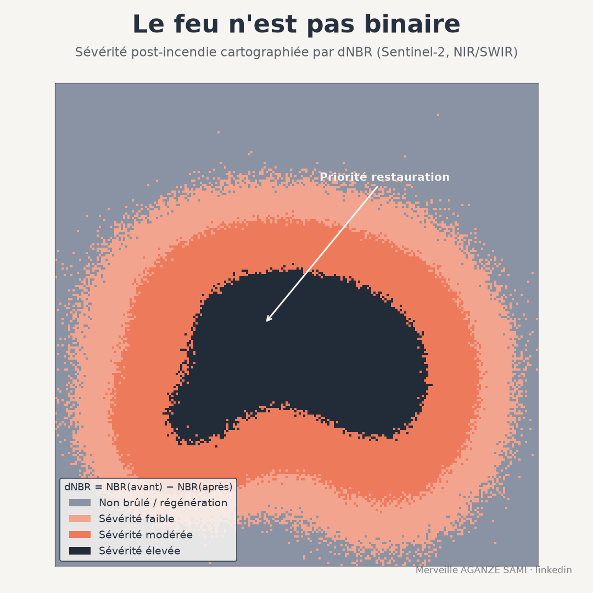

Après le passage d'un feu, la délimitation du périmètre brûlé constitue une information utile mais partielle. Elle indique où le feu est passé, sans distinguer les secteurs où le couvert végétal a été détruit de ceux où il n'a été que partiellement affecté. Or ces deux situations n'appellent ni le même diagnostic écologique, ni les mêmes mesures de restauration.
Le recours à l'observation directe se heurte à des contraintes matérielles : les surfaces concernées se comptent souvent en centaines de kilomètres carrés, dans des mosaïques forêt-savane peu accessibles. La télédétection apporte ici une mesure spatialement exhaustive, reproductible et documentée. Elle mérite d'autant plus d'attention que les inventaires satellitaires placent l'Afrique au premier rang des surfaces brûlées à l'échelle mondiale, et que les produits à résolution moyenne y sous-estiment sensiblement le total, une part importante des petits foyers échappant à une résolution de 500 mètres (Ramo et al., 2021).
1. Le fondement spectral de l'indice NBR
Le Normalized Burn Ratio exploite le comportement opposé de deux domaines spectraux face à la combustion. Dans le proche infrarouge, la réflectance est élevée pour une végétation dense et chlorophyllienne, et chute lorsque la structure foliaire est détruite. Dans l'infrarouge à ondes courtes, la réflectance augmente au contraire avec la diminution de la teneur en eau et l'apparition de sols nus, de cendres et de charbon.
La combinaison normalisée de ces deux bandes maximise donc le contraste entre une surface végétalisée et une surface brûlée. Sur Sentinel-2, elle mobilise les bandes B8A et B12 ; sur Landsat 8/9, les bandes 5 et 7. La formulation et les classes d'usage ont été établies dans le protocole d'évaluation post-incendie du programme FIREMON (Key & Benson, 2006).
2. Du NBR au dNBR
Le principe de la différence. Le dNBR se calcule comme la différence entre le NBR pré-incendie et le NBR post-incendie, conventionnellement multipliée par 1000 pour travailler en valeurs entières. Il ne mesure pas un état, mais une variation : c'est l'ampleur du changement spectral, et non la valeur absolue après le feu, qui renseigne sur l'intensité de l'impact sur le couvert.
Cette différence produit un gradient continu, discrétisé en classes — non brûlé, sévérité faible, modérée, élevée — dont les bornes indicatives issues de la littérature nord-américaine doivent être ajustées au contexte. Une savane arborée et une forêt dense ne présentent pas les mêmes amplitudes de variation.
3. Corriger l'effet du couvert initial : RdNBR et RBR
Le dNBR possède une limite structurelle : son amplitude dépend de la biomasse présente avant le feu. Une formation dense peut perdre beaucoup en valeur absolue tout en conservant une part de son couvert, tandis qu'une formation clairsemée, entièrement détruite, affiche une variation plus faible. Comparer ces deux situations sur la seule base du dNBR conduit à surestimer la sévérité dans les milieux les plus fournis.
Le Relative differenced NBR répond à ce biais en rapportant le dNBR à l'état initial, via la racine carrée du NBR pré-incendie. Cette normalisation améliore la comparabilité entre types de couvert au sein d'un même paysage hétérogène (Miller & Thode, 2007). Une formulation ultérieure, le Relativized Burn Ratio, modifie le dénominateur pour limiter l'instabilité observée lorsque le NBR pré-incendie est proche de zéro, et présente une correspondance généralement meilleure avec les mesures de terrain (Parks et al., 2014).
4. Précautions de mise en œuvre
- Choix des dates. Une évaluation immédiate, sur des images acquises peu après l'extinction, mesure l'effet direct de la combustion. Une évaluation différée, à la saison de végétation suivante, intègre la mortalité retardée et la capacité de reprise. Les deux fenêtres répondent à des questions distinctes et ne sont pas interchangeables ; celle retenue doit être précisée.
- Effet phénologique. Si les images pré et post appartiennent à des saisons différentes, la variation mesurée agrège l'effet du feu et la dynamique saisonnière du couvert. Le recours à des dates de même période, ou à un composite saisonnier, limite cette confusion.
- Nuages, fumée et ombres. Les masques de qualité doivent être appliqués strictement. Un résidu de fumée non masqué modifie la réflectance dans les deux domaines et produit des valeurs de sévérité sans fondement physique.
- Superposition géométrique. Le calcul étant réalisé pixel à pixel, un décalage entre les deux dates génère des artefacts le long des limites de parcelles et des lisières. La qualité de la co-registration doit être vérifiée avant tout traitement.
- Signal ambigu en milieu peu végétalisé. Le NBR répond à la structure et à la teneur en eau ; sur sols nus, affleurements ou zones déjà dégradées, la relation entre variation d'indice et sévérité réelle s'affaiblit sensiblement (Roy et al., 2006).
5. Calibration et validation
Les seuils de classes ne devraient pas être repris tels quels d'une publication à l'autre. La démarche recommandée consiste à calibrer localement les bornes à partir d'observations de terrain — relevés de type Composite Burn Index, photographies géolocalisées, transects — puis à documenter la relation obtenue entre valeur d'indice et sévérité observée. Cette calibration constitue la principale garantie de transférabilité d'une carte de sévérité.
À défaut d'accès au terrain, une validation partielle reste possible par confrontation avec des images à très haute résolution ou avec les déclarations des communautés riveraines, en signalant explicitement le niveau de confiance associé.
6. Usage opérationnel
Une carte de sévérité correctement produite alimente trois usages directs : la hiérarchisation des interventions de restauration, en concentrant les moyens sur les secteurs de sévérité élevée où la régénération naturelle est la moins probable ; le chiffrage de l'impact écologique, par croisement avec les couches d'occupation du sol et de biodiversité ; et la constitution d'une archive documentée de l'événement, réutilisable pour le suivi pluriannuel de la reprise.
Ce dernier point mérite attention. La comparaison de plusieurs événements dans le temps suppose que la méthode, les fenêtres temporelles et les seuils demeurent identiques. Un protocole écrit et versionné conditionne la valeur de la série constituée.
Points essentiels
- Le NBR combine proche infrarouge et infrarouge à ondes courtes pour maximiser le contraste après combustion
- Le dNBR mesure une variation entre deux dates, non un état post-incendie
- RdNBR et RBR corrigent la dépendance au couvert initial et améliorent la comparabilité
- Fenêtre temporelle, phénologie, masques et co-registration conditionnent la validité du résultat
- Les seuils de classes doivent être calibrés localement et le protocole versionné
Un feu ne produit pas un effet binaire sur le couvert végétal. C'est le gradient de sévérité, et non la seule délimitation du périmètre brûlé, qui fournit l'information nécessaire à la décision de restauration.
Références
- Key, C. H., & Benson, N. C. (2006). Landscape Assessment (LA): Sampling and Analysis Methods. In FIREMON: Fire Effects Monitoring and Inventory System (RMRS-GTR-164-CD). Fort Collins: USDA Forest Service, Rocky Mountain Research Station.
- Miller, J. D., & Thode, A. E. (2007). Quantifying burn severity in a heterogeneous landscape with a relative version of the delta Normalized Burn Ratio (dNBR). Remote Sensing of Environment, 109(1), 66–80. doi.org/10.1016/j.rse.2006.12.006
- Parks, S. A., Dillon, G. K., & Miller, C. (2014). A New Metric for Quantifying Burn Severity: The Relativized Burn Ratio. Remote Sensing, 6(3), 1827–1844. doi.org/10.3390/rs6031827
- Ramo, R., Roteta, E., Bistinas, I., van Wees, D., Bastarrika, A., Chuvieco, E., & van der Werf, G. R. (2021). African burned area and fire carbon emissions are strongly impacted by small fires undetected by coarse resolution satellite data. PNAS, 118(9), e2011160118. doi.org/10.1073/pnas.2011160118
- Roy, D. P., Boschetti, L., & Trigg, S. N. (2006). Remote Sensing of Fire Severity: Assessing the Performance of the Normalized Burn Ratio. IEEE Geoscience and Remote Sensing Letters, 3(1), 112–116. doi.org/10.1109/LGRS.2005.858485

Merveille Aganze Sami
Conseillère MEL & Gestion de Bases de Données. Plus de 9 ans d'expérience en suivi-évaluation, SIG et digitalisation auprès d'organisations internationales (GIZ, Enabel) en RD Congo.
Un suivi post-incendie à mettre en place ?
Prendre contact